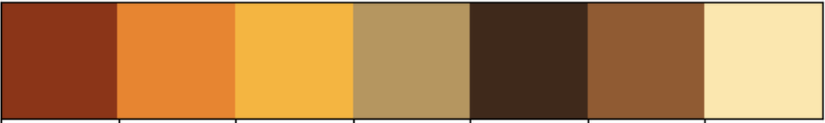

002 : Vietnamese Speaker Recognition
Welcome to the groundbreaking project in AI, dedicated to Vietnamese Speaker Recognition, aiming to revolutionize voice identification technology within the Vietnamese language landscape.
Project Color Palette

Model Framework
The model utilizes a Convolutional Neural Network (CNN) with Residual Blocks to capture intricate patterns within the speech data.
Residual Block:
The residual block is the core building block of the model, designed to gather and leverage residual information, aiding in the more effective training of deep networks.
The structure of each residual block is as follows:
- Shortcut Connection: A 1D convolutional layer with a kernel size of 1 is applied as a shortcut connection to preserve crucial information.
- Convolutional Layers: Multiple 1D convolutional layers with a kernel size of 3 are used to gather complex features.
- Activation Function: The ReLU activation function is applied after each convolutional layer to introduce non-linearity.
- Residual Connection: The output of the convolutional layers is combined with the shortcut connection through element-wise addition.
- Pooling: A max-pooling layer with a pool size of 2 and strides of 2 is applied to reduce spatial dimensions.
- Input Layer: Accepts input data with a shape of (SAMPLING_RATE // 2, 1).
- Residual Blocks: Five stacked residual blocks gradually increasing the number of filters (16, 32, 64, 128, 128) to capture hierarchical features.
- Average Pooling: An average pooling layer with a pool size of 3 and strides of 3 is applied to reduce spatial dimensions.
- Flatten: Flattens the output to prepare for fully connected layers.
- Dense Layers: Two fully connected dense layers (256 units, ReLU activation, 128 units, ReLU activation) are added to gather additional features.
- Output Layer: The output layer consists of a Dense layer with softmax activation for multi-class classification into 46 classes
Dataset for Experiment
The VIVOS dataset is a valuable resource for research in Automatic Vietnamese Speech Recognition.
Compiled by AILAB, a computer science laboratory at the University of Science - Vietnam National University Ho Chi Minh City (VNUHCM),
this dataset is spearheaded by Professor Vu Hai Quan.
This dataset serves as a foundation for studying and developing applications related to Vietnamese speech.
It has been made publicly available free of charge, aiming to attract more scientists to address issues in Vietnamese speech recognition.
@inproceedings{luong-vu-2016-non, title = "A non-expert {K}aldi recipe for {V}ietnamese Speech Recognition System", author = "Luong, Hieu-Thi and Vu, Hai-Quan", booktitle = "Proceedings of the Third International Workshop on Worldwide Language Service Infrastructure and Second Workshop on Open Infrastructures and Analysis Frameworks for Human Language Technologies ({WLSI}/{OIAF}4{HLT}2016)", month = dec, year = "2016", address = "Osaka, Japan", publisher = "The COLING 2016 Organizing Committee", url = "https://aclanthology.org/W16-5207", pages = "51--55", }
The VIVOS dataset contains Vietnamese speech data along with the following crucial information:- speaker_id: This is an ID representing the speaker (the person speaking). Each speaker is identified by a speaker_id. Identification codes range from VIVOSSPK01 to VIVOSSPK46. Each speaker is contained within a separate directory named according to their identification code.
- audio: Sound files are provided in the WAV format at a rate of 16kHz, the standard rate for Vietnamese speech recognition.
- prompt: Consists of text transcripts corresponding to the content of the audio, essentially the sentence that the speaker is prompted to articulate.
Figure above illustrates the number of audio samples in each speaker directory used for training and testing the speaker recognition task in the Vietnamese environment.
Accordingly, there are a total of 46 speaker directories, each containing from 100 to 300 audio samples, averaging around 250 audio samples per speaker.
In addition to the recording samples for each speaker, noise data is also utilized to augment the diversity of the dataset. A total of 6 noise files are used, divided into 354 samples, each lasting 1 second, and with a sampling rate equivalent to the speaker audio samples at 16kHz.
Preprocessing Data
Amplitude Envelope is a concept in audio signal processing. It represents the amplitude of an audio signal over time, creating a graph that illustrates the variation of the sound's intensity (amplitude) across time.
RMS is an important concept in audio signal processing, often used to measure the average magnitude of an audio signal over a specific period of time. It's commonly employed to assess sound intensity and finds various applications in music, speech processing, and other audio-related fields.
Zero Crossing Rate is the number of times a signal crosses the zero value along the time axis. It measures how often the signal changes its polarity over time and is commonly used to describe the smoothness and fluctuation characteristics of sound.
In the context of audio, Zero Crossing Rate is calculated by counting the instances when the amplitude of an audio signal changes from positive to negative or vice versa.
The Fourier Transform is an important mathematical method used to analyze and understand the frequency components of a signal. It converts a signal from the time domain to the frequency domain, aiding in the identification of frequency components and their respective amplitudes within the signal.

The spectrogram is a graph that displays the frequency transformation of an audio signal over time. It's commonly used to visualize how the frequency components of a signal change over time, providing essential information about both the frequency and time characteristics of the sound.
Experimental Evaluation
The experiment was conducted with 4 architectures, varying hyperparameter adjustments and different compilers, yet maintaining a common underlying architecture—utilizing residual blocks in both ResNet and CNN networks.
| Model | Dropout | Batch Normalization | Optimizer |
|---|---|---|---|
| cnn_model_v1.h5 | ❌ | ❌ | Adam |
| cnn_model_v2.h5 | ✅(20%) | ❌ | Adam |
| cnn_model_v3.h5 | ✅(20%) | ✅ | Adam |
| cnn_model_v4.h5 | ✅(20%) | ❌ | SGD |
The training process of the models:
Evaluate the experimental models:
| Model | Loss | Accuracy | F1-Score |
|---|---|---|---|
| cnn_model_v1.h5 | 1.137325 | 74.7% | 0.022222 |
| cnn_model_v2.h5 | 0.859850 | 74.3% | 0.024786 |
| cnn_model_v3.h5 | 0.972959 | 71.4% | 0.015385 |
| cnn_model_v4.h5 | 0.914903 | 43.8% | 0.022222 |
The `cnn_model_v2.h5` model is the best among the 4 models, as it has the highest accuracy, sensitivity, and F1-Score, as well as the highest AUC. However, this model can still be improved by increasing its precision. One way to do this is by augmenting the training data. Another approach is to use more advanced training techniques, such as data augmentation. Therefore, the `cnn_model_v2.h5` model will be used for deployment in the application.
Deployment Demo